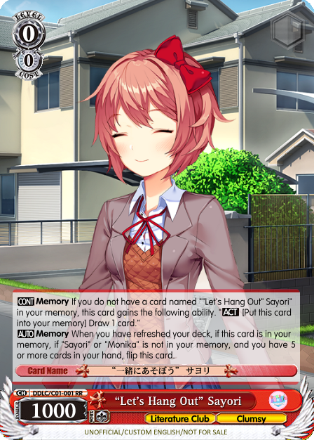
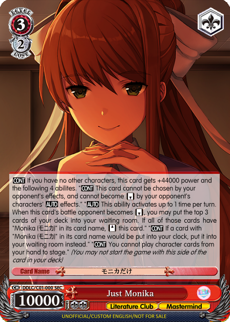

Warning: This design blog contains DDLC spoilers
When I started designing cards for the DDLC Weiss Set, I knew I had to find a way to capture the wild ride that Monika takes everybody on. There were a few key things that I wanted from the beginning:
With these goals in mind, one of the first design choices I made was to implement the flip mechanic. While this is new for Weiss Schwarz, other TCGs like Magic the Gathering have had double-sided cards for a long time, so this isn’t new territory. The flip mechanic allowed me to completely satisfy point #1 and gave me clear design guidelines for individual cards: from the front, the set should look like a pretty normal Weiss Schwarz set; when you flip them over, the cards should be pushing the limits of what Weiss Schwarz can allow as a game.
Another design choice that came early on was the heavy use of the Memory zone. Memory is the Weiss Schwarz equivalent of exile/banish mechanics in other card games, and it is used as a place to send lost or forgotten characters for flavor. It was a perfect way to recreate the deletions of Sayori, Natsuki, Yuri, and eventually Monika - I would send these characters to Memory. However, this has been done in existing Weiss sets: Da Capo deserves particular mention, as almost every Mahiru card goes to Memory for flavor purposes. So doing it here would be neat but expected and not particularly boundary-breaking.
That’s when I had the idea. What if I removed every card with a character on it and sent them all to Memory?
There are a couple of issues with this idea. First, Weiss Schwarz uses cards in different zones to keep track of various resources, damage, and game state. How would I go about removing the character from these zones? I went through a number of ideas and wordings before settling with the current effect that both Sayori, Monika, and the Event have. First, the player takes cards from all zones of the game (except for Level and Memory) and places them into the deck. Then, the player reveals the deck to their opponent and picks out all character cards that need to be removed and places them into Memory. Finally, the player reshuffles their new deck and draws 5 cards to simulate a starting hand (in Sayori’s case, you also take damage equal to the amount that was previously in your clock). By taking these steps, the player ends up with no cards in stock and 5 cards in their hand, just like at the start of the game - as if they started a New Game.
Another big issue with removing all these cards is how it affects game balance. One of the key mechanics in Weiss Schwarz is canceling damage, which is dependent on the state of your deck and the ratio of climax to non-climax cards in it. By removing a large number of non-climax cards, a player can gain a lot of advantage in the damage race; in fact, this is a win condition for certain decks, so being able to get rid of so many cards at once can be too powerful. Ultimately, I decided to balance this issue by giving Sayori effects that manipulated deck size (milling, handfixing, etc) and limiting other characters’ access to these effects. By removing Sayori from the game and gaining the compression advantage, a player would also lose out on easily accessible tools to maintain that compression. After playtesting with these changes, I felt that the deck was adequately balanced (in fact, a bit on the weaker side).
Once these issues were resolved, I had the game-breaking mechanic I wanted. The deck would play like a normal deck until the first refresh, where the first check comes in. If the player did not send Sayori to Memory, then nothing would happen and no one would be the wiser; if the player did send Sayori to Memory and met the hand requirement, the game would be flipped upside down. Sayori deletes herself from the player’s deck, and certain Natsuki and Yuri cards and climaxes will start to behave oddly. Finally, at level 3, Monika can at any time step in and snap her fingers, erasing Natsuki and Yuri cards to Memory (along with all your other cards), leaving a deck with only Monika in it. “Just Monika”.
I knew I had to have a moment where a player would only have Monika on their field, and it would be this epic, crazy showdown. I wanted to emulate both concepts of being stuck with Monika forever and also figuring out how to remove Monika completely. Using similar mechanics that I had designed for Sayori, I created a situation where all other characters are gone and only Monika characters are left, with “Just Monika” the only character on your field. At this point, “Just Monika” gives the player the ability to not take any damage - which is completely busted. At first glance, there seems to be no way to win. But “Just Monika” also coincidentally places a certain event, monika.chr, in the clock area with her mandatory effect, which contains the secret to removing Monika. After surviving an entire deck cycle being unable to deal damage, the event gets “deleted” with a refresh and Monika removes herself from your deck while simultaneously bringing everyone else back. A player loses all their resources and draws 5 cards again - another New Game scenario, just like in the actual visual novel.
This Doki Doki Literature Club Weiss Set is more than just a collection of cards, put together to be playable in this anime card game. It’s meant to be a story, a recreation of one of the most amazing visual novel experiences ever written. All the mechanics, balancing, and design were made to bring Doki Doki Literature Club to life in a card game, a place where you would never expect it.
I hope reading the cards and even possibly playing the deck for yourself will help you revisit the DDLC experience in a new and exciting way.
Weiss Schwarz is property of Bushiroad. Doki Doki Literature Club is property of Team Salvato. This is not an official site. Fair use.